Bar and line graphs (ggplot2)
This page was recently updated to reflect changes in the new version of ggplot2, 0.9.3. See Installing and using packages to make sure you have the latest version of ggplot2.
Problem
You want to do make basic bar or line graphs.
Solution
To make graphs with ggplot2, the data must be in a data frame, and in "long" (as opposed to wide) format. If your data needs to be restructured, see this page for more information.
Basic graphs with discrete x-axis
With bar graphs, there are two different things that the heights of bars commonly represent:
- The count of cases for each group -- typically, each x value represents one group. This is done with
stat_bin, which calculates the number of cases in each group (if x is discrete, then each x value is a group; if x is continuous, then all the data is automatically in one group, unless you specifiy grouping withgroup=xx). - The value of a column in the data set. This is done with
stat_identity, which leaves the y values unchanged.
| x axis is | Height of bar represents | Common name |
|---|---|---|
| Continuous | Count | Histogram |
| Discrete | Count | Bar graph |
| Continuous | Value | Bar graph |
| Discrete | Value | Bar graph |
In ggplot2, the default is to use stat_bin, so that the bar height represents the count of cases.
Bar graphs of values
Here is some sample data (derived from the tips dataset in the reshape2 package):
df <- data.frame(time = factor(c("Lunch","Dinner"), levels=c("Lunch","Dinner")), total_bill = c(14.89, 17.23)) # time total_bill # Lunch 14.89 # Dinner 17.23 # Load the ggplot2 library library(ggplot2)
In these examples, the height of the bar will represent the value in a column of the data frame.
This is done by using stat="identity" instead of the default, stat="bin".
These are the variable mappings used here:
time: x-axis and sometimes color filltotal_bill: y-axis
# Very basic bar graph ggplot(data=df, aes(x=time, y=total_bill)) + geom_bar(stat="identity") # Map the time of day to different fill colors. These both have the same result. ggplot(data=df, aes(x=time, y=total_bill, fill=time)) + geom_bar(stat="identity") ggplot(data=df, aes(x=time, y=total_bill)) + geom_bar(aes(fill=time), stat="identity") # Add a black outline ggplot(data=df, aes(x=time, y=total_bill, fill=time)) + geom_bar(colour="black", stat="identity") # No legend, since the information is redundant ggplot(data=df, aes(x=time, y=total_bill, fill=time)) + geom_bar(colour="black", stat="identity") + guides(fill=FALSE)
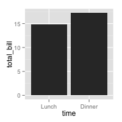 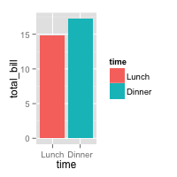 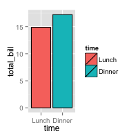 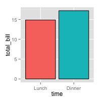
The desired bar graph might look something like this:
# Add title, narrower bars, gray fill, and change axis labels ggplot(data=df, aes(x=time, y=total_bill, fill=time)) + geom_bar(colour="black", fill="#DD8888", width=.7, stat="identity") + guides(fill=FALSE) + xlab("Time of day") + ylab("Total bill") + ggtitle("Average bill for 2 people")
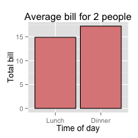
See ../Colors (ggplot2) for more information on colors.
Bar graphs of counts
In these examples, the height of the bar will represent the count of cases.
This is done by using stat="bin" (which is the default).
We'll start with the tips data from the reshape2 package:
library(reshape2) tips # total_bill tip sex smoker day time size # 16.99 1.01 Female No Sun Dinner 2 # 10.34 1.66 Male No Sun Dinner 3 # 21.01 3.50 Male No Sun Dinner 3 # ... <244 total rows> ... # 22.67 2.00 Male Yes Sat Dinner 2 # 17.82 1.75 Male No Sat Dinner 2 # 18.78 3.00 Female No Thur Dinner 2
To get a bar graph of counts, don't map a variable to y, and use stat="bin" (which is the default) instead of stat="identity":
# Bar graph of counts ggplot(data=tips, aes(x=day)) + geom_bar(stat="bin") # Equivalent to this, since stat="bin" is the default: ggplot(data=tips, aes(x=day)) + geom_bar()
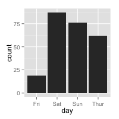
Line graphs
For line graphs, the data points must be grouped so that it knows which points to connect. In this case, it is simple -- all points should be connected, so group=1. When more variables are used and multiple lines are drawn, the grouping for lines is usually done by variable (this is seen in later examples).
These are the variable mappings used here:
time: x-axistotal_bill: y-axis
# Basic line graph. These both have the same result. ggplot(data=df, aes(x=time, y=total_bill, group=1)) + geom_line() ggplot(data=df, aes(x=time, y=total_bill)) + geom_line(aes(group=1)) # Add points ggplot(data=df, aes(x=time, y=total_bill, group=1)) + geom_line() + geom_point() # Change color of both line and points # Change line type and point type, and use thicker line and larger points # Change points to circles with white fill ggplot(data=df, aes(x=time, y=total_bill, group=1)) + geom_line(colour="red", linetype="dotted", size=1.5) + geom_point(colour="red", size=4, shape=21, fill="white")
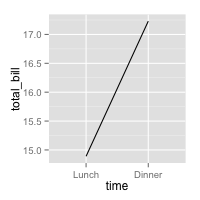 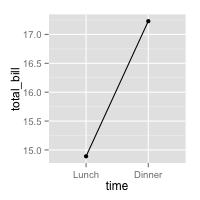 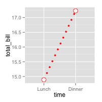
The desired line graph might look something like this:
# Change the y-range to go from 0 to the maximum value in the total_bill column, # and change axis labels ggplot(data=df, aes(x=time, y=total_bill, group=1)) + geom_line() + geom_point() + ylim(0, max(df$total_bill)) + xlab("Time of day") + ylab("Total bill") + ggtitle("Average bill for 2 people")
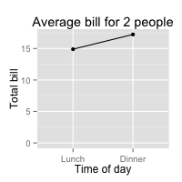
See ../Colors (ggplot2) for more information on colors, and ../Shapes and line types for information on shapes and line types.
Graphs with more variables
This data will be used for the examples below:
df1 <- data.frame(sex = factor(c("Female","Female","Male","Male")), time = factor(c("Lunch","Dinner","Lunch","Dinner"), levels=c("Lunch","Dinner")), total_bill = c(13.53, 16.81, 16.24, 17.42)) # sex time total_bill # Female Lunch 13.53 # Female Dinner 16.81 # Male Lunch 16.24 # Male Dinner 17.42
This is derived from the tips dataset in the reshape2 package.
Bar graphs
These are the variable mappings used here:
time: x-axissex: color filltotal_bill: y-axis.
# Stacked bar graph -- this is probably not what you want ggplot(data=df1, aes(x=time, y=total_bill, fill=sex)) + geom_bar(stat="identity") # Bar graph, time on x-axis, color fill grouped by sex -- use position_dodge() ggplot(data=df1, aes(x=time, y=total_bill, fill=sex)) + geom_bar(stat="identity", position=position_dodge()) ggplot(data=df1, aes(x=time, y=total_bill, fill=sex)) + geom_bar(stat="identity", position=position_dodge(), colour="black") # Change colors ggplot(data=df1, aes(x=time, y=total_bill, fill=sex)) + geom_bar(stat="identity", position=position_dodge(), colour="black") + scale_fill_manual(values=c("#999999", "#E69F00"))
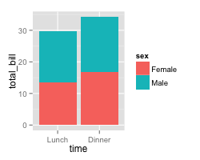 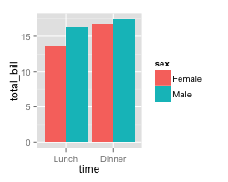 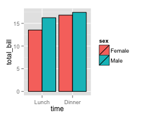 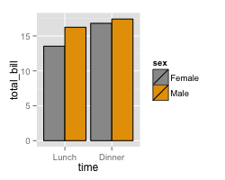
It is easy to change which variable is mapped the x-axis and which is mapped to the fill.
# Bar graph, time on x-axis, color fill grouped by sex -- use position_dodge() ggplot(data=df1, aes(x=sex, y=total_bill, fill=time)) + geom_bar(stat="identity", position=position_dodge(), colour="black")
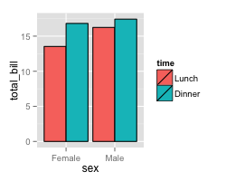
See ../Colors (ggplot2) for more information on colors.
Line graphs
These are the variable mappings used here:
time: x-axissex: line colortotal_bill: y-axis.
To draw multiple lines, the points must be grouped by a variable; otherwise all points will be connected by a single line. In this case, we want them to be grouped by sex.
# Basic line graph with points ggplot(data=df1, aes(x=time, y=total_bill, group=sex)) + geom_line() + geom_point() # Map sex to color ggplot(data=df1, aes(x=time, y=total_bill, group=sex, colour=sex)) + geom_line() + geom_point() # Map sex to different point shape, and use larger points ggplot(data=df1, aes(x=time, y=total_bill, group=sex, shape=sex)) + geom_line() + geom_point() # Use thicker lines and larger points, and hollow white-filled points ggplot(data=df1, aes(x=time, y=total_bill, group=sex, shape=sex)) + geom_line(size=1.5) + geom_point(size=3, fill="white") + scale_shape_manual(values=c(22,21))
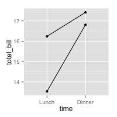 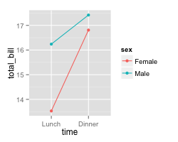 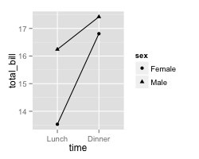 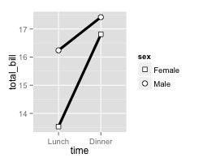
It is easy to change which variable is mapped the x-axis and which is mapped to the color or shape.
ggplot(data=df1, aes(x=sex, y=total_bill, group=time, shape=time, color=time)) + geom_line() + geom_point()
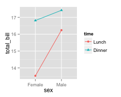
See ../Colors (ggplot2) for more information on colors, and ../Shapes and line types for information on shapes and line types.
Finished examples
The finished graphs might look like these:
# A bar graph ggplot(data=df1, aes(x=time, y=total_bill, fill=sex)) + geom_bar(colour="black", stat="identity", position=position_dodge(), size=.3) + # Thinner lines scale_fill_hue(name="Sex of payer") + # Set legend title xlab("Time of day") + ylab("Total bill") + # Set axis labels ggtitle("Average bill for 2 people") + # Set title theme_bw() # A line graph ggplot(data=df1, aes(x=time, y=total_bill, group=sex, shape=sex, colour=sex)) + geom_line(aes(linetype=sex), size=1) + # Set linetype by sex geom_point(size=3, fill="white") + # Use larger points, fill with white ylim(0, max(df1$total_bill)) + # Set y range scale_colour_hue(name="Sex of payer", # Set legend title l=30) + # Use darker colors (lightness=30) scale_shape_manual(name="Sex of payer", values=c(22,21)) + # Use points with a fill color scale_linetype_discrete(name="Sex of payer") + xlab("Time of day") + ylab("Total bill") + # Set axis labels ggtitle("Average bill for 2 people") + # Set title theme_bw() + theme(legend.position=c(.7, .4)) # Position legend inside # This must go after theme_bw
In the line graph, the reason that the legend title, "Sex of payer", must be specified three times is so that there is only one legend. The issue is explained here.
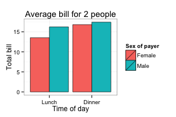 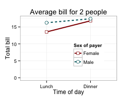
With a numeric x-axis
When the variable on the x-axis is numeric, it is sometimes useful to treat it as continuous, and sometimes useful to treat it as categorical. In this data set, the dose is a numeric variable with values 0.5, 1.0, and 2.0. It might be useful to treat these values as equal categories when making a graph.
dfn <- read.table(header=T, text=' supp dose length OJ 0.5 13.23 OJ 1.0 22.70 OJ 2.0 26.06 VC 0.5 7.98 VC 1.0 16.77 VC 2.0 26.14 ')
This is derived from the ToothGrowth dataset included with R.
With x-axis treated as continuous
A simple graph might put dose on the x-axis as a numeric value. It is possible to make a line graph this way, but not a bar graph.
ggplot(data=dfn, aes(x=dose, y=length, group=supp, colour=supp)) + geom_line() + geom_point()
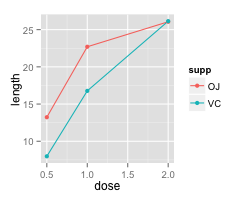
With x-axis treated as categorical
If you wish to treat it as a categorical variable instead of a numeric one, it must be converted to a factor. This can be done by modifying the data frame, or by changing the specification of the graph.
# Copy the data frame and convert dose to a factor dfn2 <- dfn dfn2$dose <- factor(dfn2$dose) ggplot(data=dfn2, aes(x=dose, y=length, group=supp, colour=supp)) + geom_line() + geom_point() # Use the original data frame, but put factor() directly in the plot specification ggplot(data=dfn, aes(x=factor(dose), y=length, group=supp, colour=supp)) + geom_line() + geom_point()
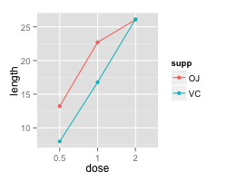 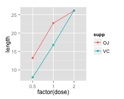
It is also possible to make a bar graph when the variable is treated as categorical rather than numeric.
# Use dfn2 from above ggplot(data=dfn2, aes(x=dose, y=length, fill=supp)) + geom_bar(stat="identity", position=position_dodge()) # Use the original data frame, but put factor() directly in the plot specification ggplot(data=dfn, aes(x=factor(dose), y=length, fill=supp)) + geom_bar(stat="identity", position=position_dodge())
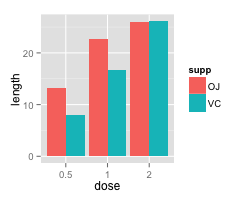 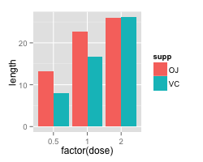